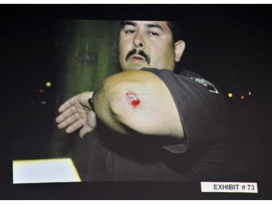

| Protected and Served to Death: Kelly Thomas |

A
certain percentage, they tell us, must go … that way -- to the devil, I suppose….
A percentage! What splendid words they have; they are so scientific, so
consolatory…. Once you’ve said `percentage’ there’s nothing more to worry
about.
Kelly Thomas wasn’t beaten to death by a thugscrum of eight police
officers; he simply happened to die while they were striking, kicking, and
choking him. That’s what Dr. Steven Karch would have us believe, or at least
pretend to.
Manuel Ramos and Jay Cincinelli, who were among the six Fullerton,
California officers involved in the July 5, 2011 gang beating of Thomas, are
currently on trial for involuntary manslaughter and second-degree murder.

Karch
was paid handsomely to peddle puerile lies on behalf of the defense.
Thomas, who had no criminal record, was repeatedly tasered
and beaten with batons while the assailants chanted the shared refrain of
rapists and police officers: “Stop resisting!”
At one point, Cincinelli – frustrated
that Thomas didn’t simply submit and die – clubbed the victim in the face with
the butt of his Taser. (“We ran out of options,” Cincinelli later explained, “so
I got the end of my Taser and I … just smashed his face to hell.”) Numerous
eyewitnesses testified that the attack continued long after Thomas was inert
and motionless.
Prior to Karch’s
testimony, the Orange
County coroner and the trauma surgeon who had treated Thomas testified that
the slender, troubled homeless man died as a result of oxygen deprivation
caused by prolonged chest compression and repeated blunt facial trauma during
the seven-minute onslaught. Unlike Karch, those medical professionals had
first-hand involvement in the case.
Karch never met Kelly Thomas while he was alive, nor did he
examine his mortal remains after Fullerton’s paladins of public order had
protected and served him into an irreversible coma. His testimony was both
untainted by fact and untouched by doubt: In his view, Thomas died as a result
of drug use, not from the lethal ministrations of the State’s punitive
priesthood.

Speaking
with a certitude unencumbered by facts, Karch insisted that Thomas died
from “methamphetamine cardiomyopathy.” As it happens, the toxicology report on
Thomas’s remains showed that he had no trace of alcohol or drugs in his system
at the time of his death.
This doesn’t matter, insisted Karch, because Thomas was a meth user decades ago, which could have left him with both a weakened
heart and a tendency to have sudden, unpredictable psychotic episodes.
Kelly Thomas was entirely responsible for his own death, according
to Karch, beginning with the supposed “psychotic episode” that triggered
the confrontation with the police. Apparently, Thomas’s earlier drug abuse had
also endowed the 160-lb. man with superhuman strength.
“It’s not easy to throw a half-dozen policemen around,”
Karch stated on the witness stand, breezily revising an incident in which
Thomas was pinned down and helpless, his face being beaten into an
unrecognizable mass while he cried out for his father. “I can’t imagine a
situation in which I’d fight with six police officers.”
Thomas most likely would have agreed with that assessment,
given that he did everything he could to avoid the confrontation Ramos was
irrationally determined to provoke. If the oft-misused term “psychotic” applies
to the events of that evening, it would best be used to describe the behavior
of the assailants, rather than the victim.

After making contact with Thomas, Ramos mocked, taunted, and
harassed the mentally troubled man before devising an excuse to attack him.
“See these fists?” Ramos gloatingly said as he snapped on a
pair of latex gloves. “They’re getting ready to f**k you up.”
That gesture, like all of the other actions by police
officers during the attack, was compatible with the Fullerton PD’s use of force
policy, according to the testimony of Corporal Stephen Rubio, who helps train
the department’s costumed simians. Rubio referred to that overture to a beating
as a “conditional threat,” a description that could apply to any threat emitted
by any common criminal of the variety not imbued with "qualified immunity."
Kelly Thomas’s father, Ron Thomas (a retired sheriff’s
deputy) reports that his troubled son had been diagnosed with schizophrenia.
Ramos suffered from a far deadlier psychosis – one that is highly contagious,
as the actions of his comrades that evening demonstrate.
 |
| What a hero: Ramos displays his "battle" injury. |

Whatever its etiology, aggressive violence is a behavioral
disorder. Law enforcement aggressively recruits people inclined toward such
behavior and provides them with a license to express their violent impulses.
When this results in a manifestly unnecessary and avoidable death, police
unions and hireling “experts” like Karch will insist that the officers are
blameless: It’s not that the police killed the victim, he just happened to die in
their presence.
“He could have died sitting in a closet by himself,” Karch smugly asserted on the witness stand. Asked during cross-examination if he was saying that Thomas “was destined to die on that particular day and the police just happened to be there,” Karch left that question in the hands of Providence: “Only God can say that.”
“He could have died sitting in a closet by himself,” Karch smugly asserted on the witness stand. Asked during cross-examination if he was saying that Thomas “was destined to die on that particular day and the police just happened to be there,” Karch left that question in the hands of Providence: “Only God can say that.”
Karch affects the title “Doctor,” but in his work as a
police apologist his philosophical tutor is not Hippocrates; it’s Raskolnikov,
the nihilistic protagonist in Dostoyevsky’s Crime
and Punishment. Convinced that he is a transcendent figure who is not
beholden to the moral laws that govern the rest of humanity, Raskolnikov
decides to murder a thoroughly unpleasant old woman in order to establish his
status as a post-human “superman.”
“On the one hand we have a stupid, senseless, worthless, spiteful, ailing, horrid old woman, not simply useless but doing actual mischief, who has not an idea what she is living for herself, and who will die in a day or two in any case…. On the other side, we have fresh young lives thrown away for want of help and by thousands, on every side. A hundred thousand good deeds could be done and helped, on that old woman’s money, which will be buried in a monastery…. Kill her, take her money and with the help of it devote one’s self to the service of humanity and the good of all. What do you think – would not one tiny crime be wiped out by thousands of good deeds?... One death, and a hundred lives in exchange – it’s simple arithmetic.”
To the best of my knowledge, Steven Karch has no hands-on experience with lethal violence. He displays his perverse ingenuity by dispensing sophisms intended to persuade the credulous that the victim of police violence was simply going to die anyway – so the assailants are not to blame. In that role, Karch has not only served as an “expert witness” on behalf of killer cops, but also as a federally subsidized evangelist on behalf of the concept of “excited delirium,” a mysterious condition that seems to afflict only those who are gang-tackled, tased, and otherwise abused by police.
Such unfortunate souls are merely part of the sacrificial “percentage”
necessary in order to preserve social order, Karch and his ilk insist, in the
serene confidence that neither they nor anyone they love will be found in that
category.
Dum spiro, pugno!
14 comments:
As beautifully and compellingly stated as always.
this story of a schizophrenic young man, by definition out of touch with reality and not responsible, beaten to death by cops as he calls out for his father, makes me sad beyond what i can describe in words.
the rage it evokes is beyond being capable of description by words, as well.
that reflected power will not last forever.
Thank god ordinary citizens have the Thin Blue Line to protect us from primitive savages who would bludgeon us to death on the flimsiest of pretexts. Right?
Perhaps Fullerton's finest six were under the spell of Murray N. Rothbard's "Right-Wing Populism". MNR wrote,
"4. Take Back the Streets: Crush Criminals. And by this I mean, of course, not 'white collar criminals' or 'inside traders' but violent street criminals – robbers, muggers, rapists, murderers. Cops MUST BE UNLEASHED, and allowed to administer instant punishment, subject of course to liability when they are in error.
5. Take Back the Streets: Get Rid of the Bums. Again: UNLEASH THE COPS to clear the streets of bums and vagrants. Where will they go? Who cares? Hopefully, they will disappear, that is, move from the ranks of the petted and cosseted bum class to the ranks of the productive members of society."
So, the case of Kelly Thomas involves a few unleashed cops being taken to court to investigate the possibility that they were in error. Maybe they were in error, and maybe they weren't. The important thing, however, is that Fullerton's finest were unleashed first and subjected to liability later, as prescribed by Rothbard, alleged enemy of the state.
Rothbard also condemned what he called "The American soul-sickness" displayed in public enthusiasm for police violence against "hippies" and other non-conformists during the 1960s:
"There are apparently tens of millions of God-fearing Americans who favor the genocidal destruction of hundreds of thousands or even millions of young people whose only crime is to persist in esthetic differentiation from the mass of the populace.
The American soul-sickness is also manifest in the pervasive reaction to the problem of `violence' in America. Mention `violence' and the average person begins to fulminate against isolated muggers, against Negroes who burn down stores, and against students who blacken a few ashtrays in university buildings."
"Massacre at People's Park," The Libertarian Forum, June 15, 1969
Although incontestably brilliant, Rothbard succumbed to inconsistency.
Oh it is great that you agree with this. I know that its hard to belive on this but u did and wrote a good post.
Anon Jan 5th,
Your quotes would have much more effect if you actually provided references, so that readers who are curious or plain skeptical that you may have quoted out of context, can go check for themselves.
"Right-Wing Populism," was first published alling with "For President: Pat Buchanan," "Buchanan for President" (with L. H. Rockwell, Jr.), "Right-Wing Populism," "Time for War!"
In: Rothbard-Rockwell Report. Burlingame, CA: Center for Libertarian Studies, Vol. 3 No. 1 (January 1992).
It is reproduced and available as a free .PDF here: http://mises.org/document/4305/The-Irrepressible-Rothbard
The section which you quote is reproduced on Page 41.
The background is of Rothbard trying to create an alliance of libertarian's with "old right" conservatives (as opposed to the big government Buckleyite neo-cons).
Though I've only scan read it so far, I'm actually surprised and dismayed at its content.
My initial response is that it shows the dangers of participating in the process by which one section of society claims the legal "right" to enrich itself by abuse of and theft from the rest of society - that class of behaviour which would seek to justify gang rape, lynch mobs and looting - "will of a majority"
I'll be reading it more carefully later on. It certainly seems to conflict with Rothbard's scholarly and carefully reasoned works, developing from the non agression principle (NAP), and advocacy of Gustav de Molinari's ideas of competitive free market provision of defense and dispute resolution services.
Even if we do take the Rothbard quote at face value, the unprovoked beating of Kelly Thomas undoubtedly represents "error" for which Rothbard recomends "[the assailands should be]subject of course to liability".
Check out this story from Brunswick County NC. I'm originally from the area and they have had deep issues with that agency for decades. This is just another incident in a long line. When I read the story I was completely unsurprised it happened there.
Parents call police, cops show up and kill 18-year-old son...
http://dailycaller.com/2014/01/05/parents-call-police-for-help-cops-show-up-and-kill-their-18-year-old-son/
This is sickening to look at and read a mentally ill person needs help not to be beaten to death.
But quite a few if not many sadly think that is what should be done to the mentally ill, to the poor and destitute just kill them and be done with it.
The same type of thinking nazi germany had.
as for the cops in question shame on them such force was not needed against that man. You would think think they were fighting a professional killer but no they just bullied a mentally ill man to such a degree it cost said man his life.
cops once thought as protectors now are nothing but state sanctioned thugs and the real troubling thing about this is cases like this are on the rise and good cops woe them if they try to interfere in this they will reprimanded and possibly fired.
The reason why so many go corrupt there no good examples to follow only bad all around which makes people decide good is not good for them.
Another example of protecting and serving:
http://www.thedailysheeple.com/this-shocking-video-of-laughing-nj-cops-brutalizing-a-young-prisoner-doesnt-need-audio-to-horrify-you_012014
Keith, I think that you've missed most of my point about Rothbard's outlandish call to "unleash the cops". If Rothbard had been genuinely interested in curtailing statism, he might have called for cops to be disarmed. Then he would have called for their pensions to be abolished. In fact, a thoroughgoing antistatist would not have called for beating up on people who are at most a trivial nuisance but instead suggested that the homeless be unleased, perhaps in exchange for pay, upon the goon squads of the political class. Targeting the Fraternal Order of Police, too, would have been a nice touch.
But, no.
Rothbard of all people was aware of the tendency of powerful people to abuse their power and to grasp for ever more power. But how, once ALL COPS have been unleashed, would cops be put back on suitably short leashes such that mistaken ones can be held liable for their errors?
So, now we need to explain MNR's remarks, and my best hypothesis so far is that he was suffering from a phenomenon called magnification. As one ages, one's character flaws become more intense. It would be ironic if I'm correct, for it stands to reason that Rothbard's own "soul-sickness" was written about by none other than Murray N. Rothbard in 1969. Perhaps it was but the first of several projection alerts.
It's by the way that Lew Rockwell's fingerprints are all over "Right-Wing Populism".
-Anonymous, and still homeless, as of 3:07 PM, 5 January, 2014.
@anon... Sweet Jebus! You've essentially hijacked the comments over an article about a homeless man being beaten to death, as you yourself supposedly "claim" to be homeless, and direct the comments towards what Rothbard said over forty years ago. Mission accomplished I assume.
MoT, grow up and stop ignoring the great importance of a very bad idea that was promoted by Rothbard not "over forty years ago" but in the early 1990s, near the end of his career. Maybe it would help you to bear in mind also the title of this blog. Do that then notice that Rothbard's nasty advice about unleashing cops was not given "over forty years ago" as you disingenuously suggested in your snide reply.
It's by the way that a few unleashed cops in California beat the rap for the assault, battery, and killing of Kelly Thomas. So much for subjecting them "to liability when they are in error." So, I say...
Releash all cops. Divide American cops against their federal protectors*. Disarm cops. Slash their pay and benefits to bring their weight down to a level at which they can be managed by individuals, esp. those who lack their advantages in terms of training and centralized coordination. Recognize that cops everywhere in the world are the occupation forces of crime syndicates, and do not be that law and order conservative who refuses to concede that every leftist despotism would be a impossible dream without cops.
* It's ironic that the John Birch Society, too, doesn't want local cops federalized. But of course the JBS will want local cops to remained armed and unleashed. Thus do they despise "'civilian review boards'".
"Great men smash laws, smash old ways, in order to create new ones. Great men are not afraid to be criminals."
"Taking a new step, uttering a new word, is what people fear most."
"Man grows used to everything, the scoundrel."
"Talking nonsense is man's only privilege that distinguishes him from all other organisms."
Nothing in this world is harder than speaking the truth, nothing easier than flattery."
"If not reason, then the devil."
"Pain and suffering are always inevitable for a large intelligence and a deep heart. The really great men must, I think, have great sadness on Earth."
http://www.youtube.com/watch?v=JLdIyTOPaE4
Post a Comment